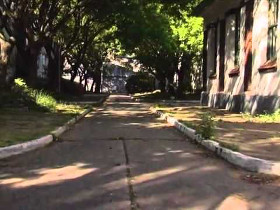

Toponimia
Toponymy
Jonathan Perel – Argentinien 2015
82 min – HD – Spanish OV Engl ST
Sc+DoP+S+E+P: Jonathan Perel – Prix Camira (FIDMarseille 2015)
German Premiere
We are in the province of Tucuman, in the north of Argentina, where the “Operation Independence” took place in 1974, during which the guerillas’ insurgence was violently repressed. A repression which was even extended to the urban areas. How? By setting up a series of new villages built according to the same guidelines, and whose structures adher to a specific political project. Perel systematically unfolds these spaces, one after the other: the place, the inscription of its identity, the monument dedicated to the person whose name it bears, fighters who died during the struggles with the guerillas, the church, yet without ignorng its ordinary housing and streets. A disturbing repetition which reveals in four chapters identical to one another the harshness of the system, each one opening with the official documents of the founding of these villages, filming the gloominess of the places today. A systematic approach that deafens the fearfulness of the project, from one place to the next, rhythmed like a metronome, drawing upon the layout of the landscape, its relics and exhaustion. – FIDMarseille
tuesday 13 oct 8.15 pm werkstattkino
Jonathan Perel born in 1976, lives and works in Buenos Aires. He attended a degree in Arts at the Faculty of Philosophy and Letters (University of Buenos Aires).
Films (selection) El Predio 2010 – 17 Monumentos 2012 – Tabula Rasa 2013 – Toponimia 2015